Steel Tide: to review
Version 30, 11-16 6:06 PM. New: Ocean Titan torpedoes you can see (in review) and the Reactor Beam's white core into the impact flash (reviewed, ships next). Live in M136: the small hit X, the 6.5 s Reactor Beam, the sonar wave, the Wave Runner / ship fix. The scripted trailer is stopped. Not on this page: ground fog (third round running, stays off), skill previews (being finished). Newest first. Total 19.8 MB.
Mech beam: where it hits a surface (now live) live M133
Updated 11-16 7:20 PM ET · captured from Viewer export of the build that is now live (M133)
What changed: The beam now fades into a ragged white-hot spark burst that covers the contact; the boxed end, the red blob and the stray lines along the beam are gone.
Where to look: Clip and first sheet: the Leviathan mouth, where the beam ends in a spiky white burst. Second sheet: on sand, a red puff still drifts left of the hit.
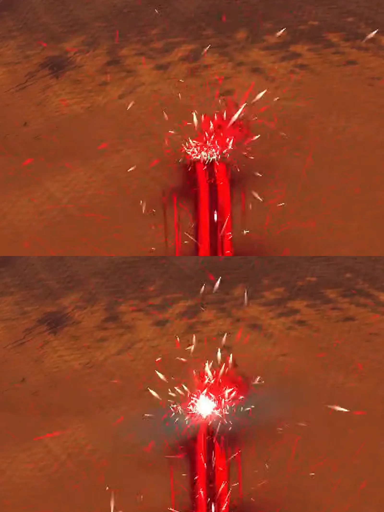
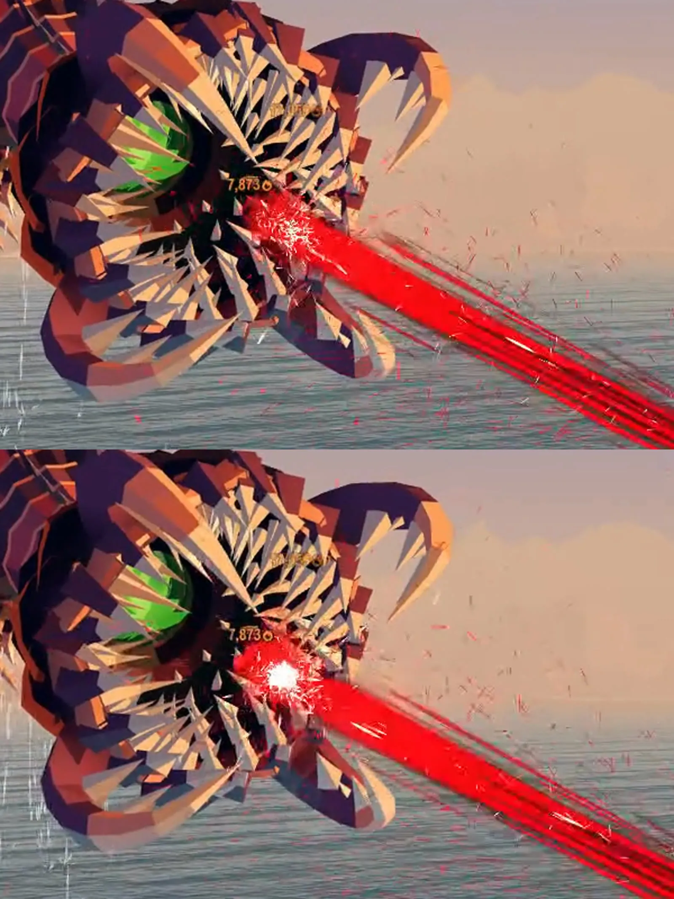
Open the video on its own (0.7 MB)Ocean Titan: the new seeker drones live M132
Updated 11-16 6:55 PM ET · captured from lane build 40d6398772, the same model that is live in M132
What changed: Modelled grey seeker jets with orange accents replace the box drones; they fly in a V and dive nose-down.
Where to look: Top row: the new drone. Middle: on the catapult, then the old boxes. Bottom: at the play camera they are small specks in the gun run.
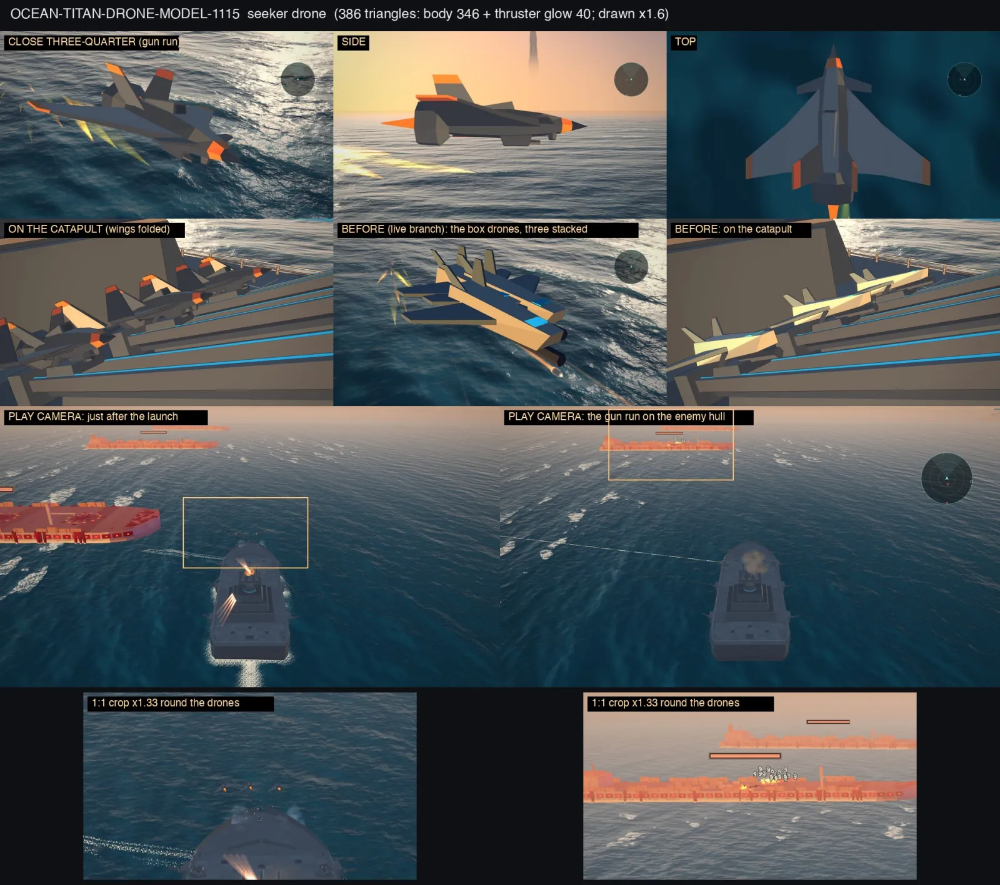
Ocean Titan: torpedoes you can see, warm lights (not live yet) in review
Updated 11-16 6:06 PM ET · captured from lane build a3b8e44a14 (Viewer export)
What changed: Each torpedo launch now throws a splash at the bow, each torpedo leaves a thin foam wake with a warm motor glow, and the hit shows on the target. The bridge band and rail lights are warm, no longer cyan. A bug that hid the torpedo track entirely is fixed.
Where to look: First still: the fan of thin white wakes leaving the bow, with the warm glow ahead of them. Second: the same run in small frames; the wakes are faint by 7.5 s (say if you want them to last longer). Third: side view, the warm band on the bridge; the small cyan bar beside it is still being traced.
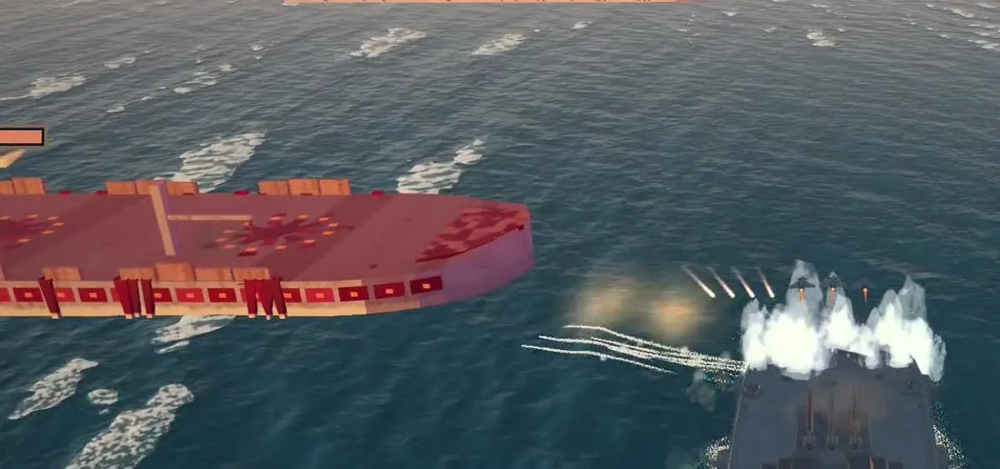
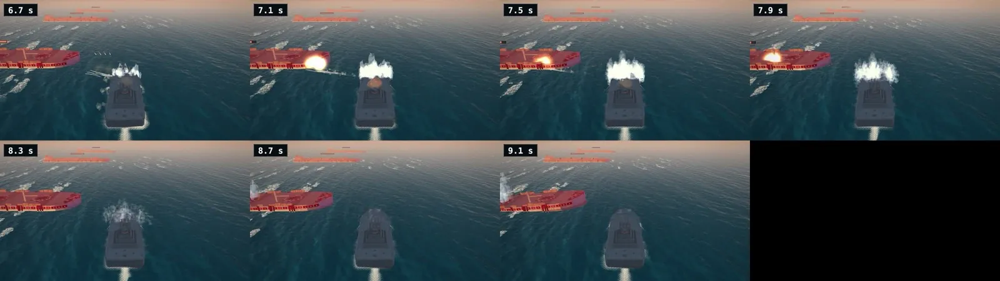
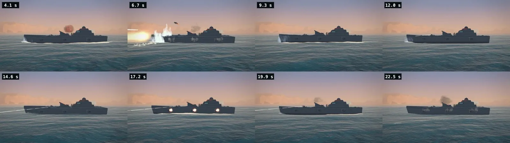
Reactor Beam: white core runs into the impact flash (not live yet) in review
Updated 11-16 5:32 PM ET · captured from lane build 3d388e7e5e (Viewer export)
What changed: The white core is now one unbroken line from the mech's chest into the white centre of the impact flash. Chest sparks travel half as far and are 20% fewer; both are new Tuning rows.
Where to look: First still: the whole beam, follow the white line from the mech (bottom right) into the white star (top left). Second: the impact, live build on the left, the fix on the right. Third: the chest sparks, live left, fix right (different scenes, so compare the spark spread only).
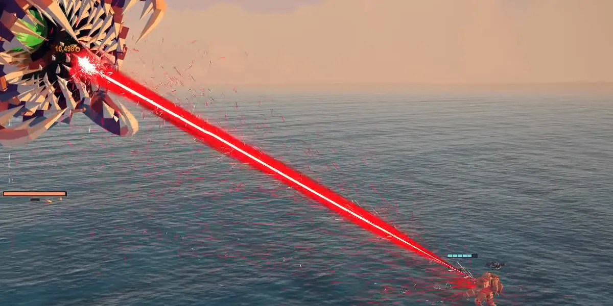
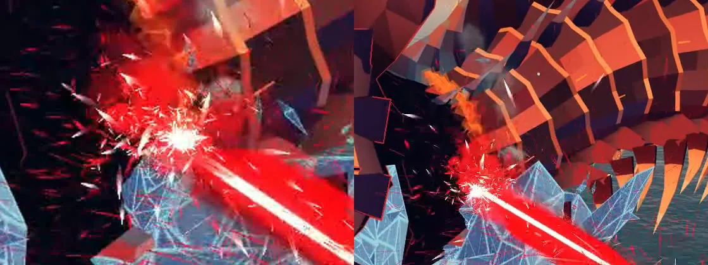
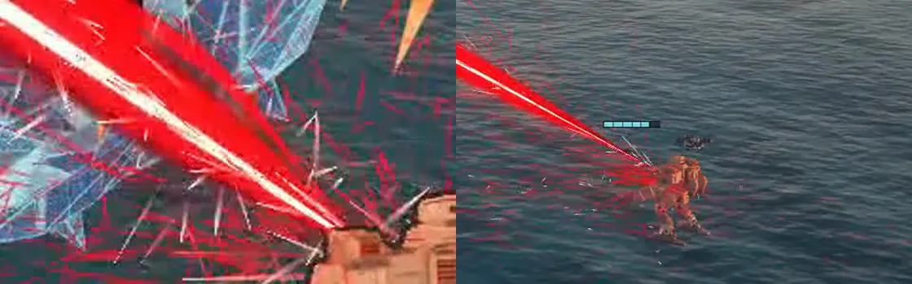
Leviathan finisher with the new beam (now live) live M135
Updated 11-16 5:14 PM ET · captured from live build 8c4f86db57 (Viewer export on the laptop)
What changed: The finisher now uses the new beam: tapered end with a white flare on the neck, no square end, no stray bars. Still to come (in progress): the white core running unbroken into the flash, and fewer, shorter sparks at the chest.
Where to look: Clip: 6.7 s to 8.4 s, the red beam from the mech to the Leviathan's neck. First still: the live frame at 7.4 s. Second still: new beam on top, the old one below.
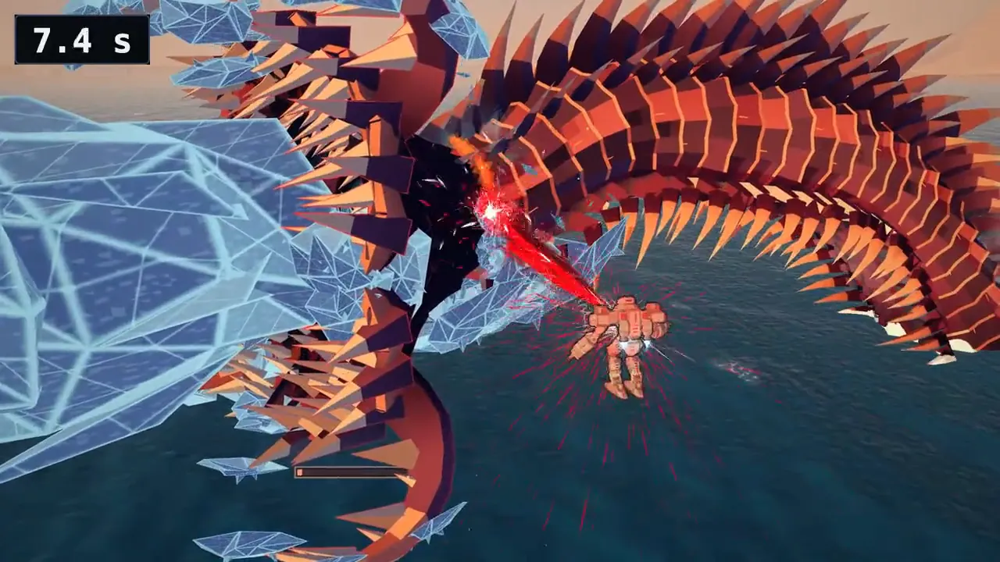
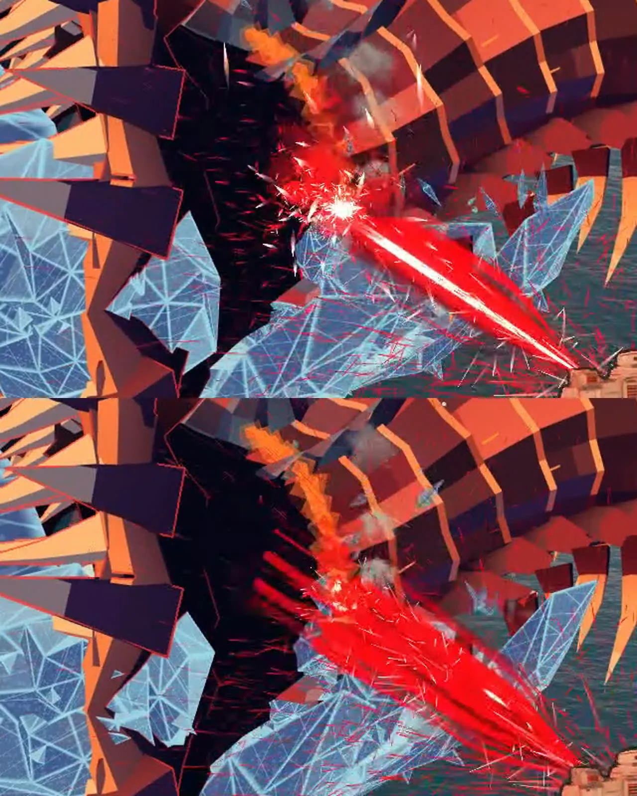
Open the video on its own (5.0 MB)Hit X on the reticle: before and after the fix (now live) live M136
Updated 11-16 4:53 PM ET · captured from left: live build; right: lane build 6fcba462bb, 2560x1440
What changed: The X has short arms again and no longer grows when the reticle opens (about 39 px across before with the reticle open, 14 px after).
Where to look: Each sheet: left column is live now, right column is the fix. Rows: body hit (white), weak point (amber), kill (red). First sheet reticle open, second reticle tight.
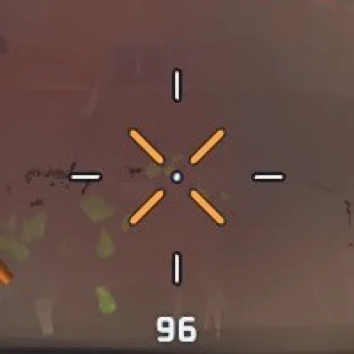
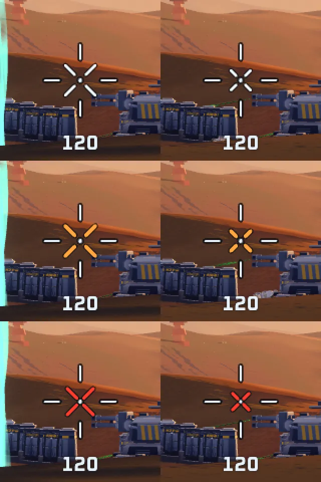
Ocean Titan sonar ping: a wave in the sea (now live) live M136, not seen in motion
Updated 11-16 4:51 PM ET · captured from lane build 331fa5a5be
What changed: The flat cyan ring is gone; the sea itself now draws the ping as a foam-capped wave moving out from the ship.
Where to look: Strip: top row is the old cyan ring, bottom row is the new wave at the same moments. Single frame: the broken white foam arcs around the ship. Stills only: nobody has seen it in motion yet.
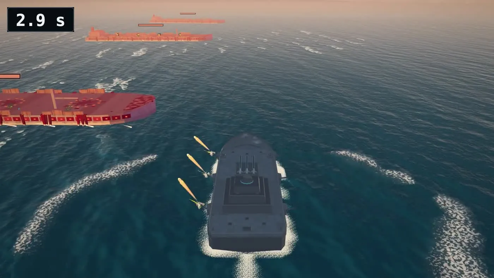
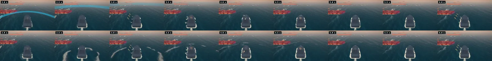
Test range: mech boost, hop and slam landing live M96 (switch "Mech weight")
Updated 11-16 12:56 PM ET · captured from live game, test range
What changed: First range clip of the landing weight: the clip is weight ON; the sheet shows ON over OFF.
Where to look: The slam landing at about 3 s: dust and the body dip. The hop takes the mech out of the top of the frame for about a second (camera not fixed yet).
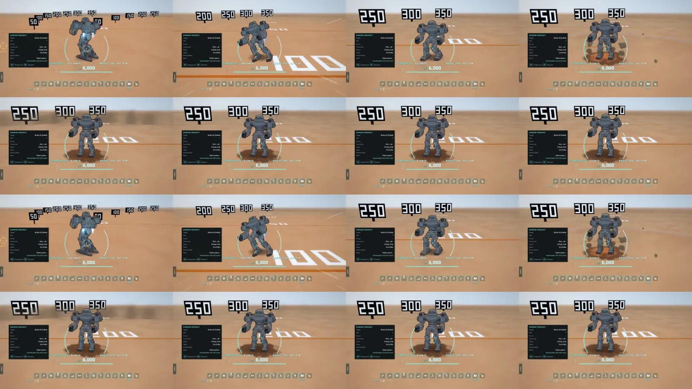
Open the video on its own (0.9 MB)Test range: mech weight on a walk, hard turn, dash and stop live M96 (switch "Mech weight")
Updated 11-16 12:55 PM ET · captured from live game, test range
What changed: First range clip of the mech weight motion: the clip is weight ON; the sheet shows ON (top two rows) over OFF (bottom two rows).
Where to look: The stop after the dash, about 5 s in: the torso settles with weight ON. The difference is subtle in stills.
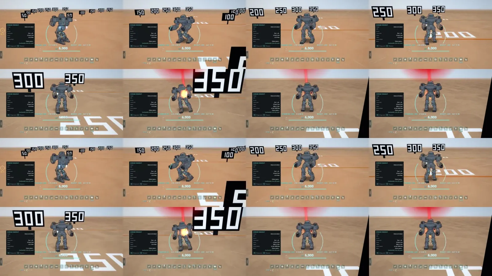
Open the video on its own (1.4 MB)Test range: the mech's slam, filmed by the range's own clip tool live M105
Updated 11-16 9:55 AM ET · captured from live build M120
What changed: First clip ever made from the test range: one command picks a scene (here 'Mech: slam') and films it.
Where to look: 0:01 the mech hops, 0:02 the slam lands and throws up the dust ring; distance boards behind it.
Open the video on its own (0.3 MB)Test range: assault rifle on 10 Brutes (range works; clip framing broken) live M105; clip framing being fixed
Updated 11-16 9:52 AM ET · captured from live build M120
What changed: The range ran the scene and measured it: the damage panel (left) counts shots, hits and damage per second as the Brutes die.
Where to look: Damage panel on the left of each frame: 650 damage a second, 10 Brutes down. The parked mech blocks the view of the targets: that framing is being fixed now.
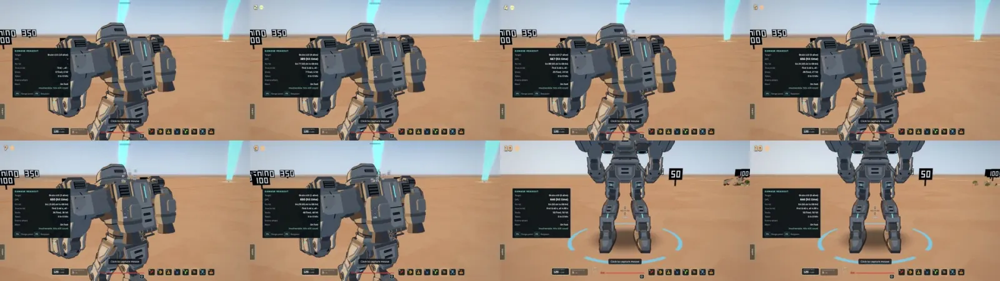
Ocean Titan in real combat live M117
Updated 11-16 4:29 AM ET · captured from lane build 69ac20a10f (same look as live M117)
What changed: Real fight: torpedoes sink the near ship, a second wave arrives; closer camera, broadside flash and smoke, warm tracers, fog wall at the sea's edge. Torpedo wake dropped.
Where to look: 4-12 s: broadside and the sinking ship; 15-21 s: tracers to the fliers (still thin). Each change has its own switch in Settings.
Viewer export of the titan and its two manned gatlings.
 Open the video on its own (2.9 MB)
Open the video on its own (2.9 MB)Tree elite (Widow) live M115
Updated 11-16 4:04 AM ET · captured from lane build 2fc4f3440d (live as M115)
What changed: Now live. The perched shot no longer hides it behind fronds; it hangs clear in front of the trunk.
Where to look: First still: perched under the crown; video 4-7 s perched and spitting, 9 s falls with the palm, 20 s breaks apart.
Your pick: it hangs upside down in a palm and fires a long-range shot. First frames: hanging and aiming, then on the ground after its tree is felled. Model only so far: the behaviour is being built on the laptop, so nothing here ran in a real match. No name is drawn in play.

 Open the video on its own (3.3 MB)
Open the video on its own (3.3 MB)Lagoon Sniper: true damage numbers live M98
Updated 11-15 11:52 PM ET · captured from lane build 72bfca79d2
What changed: A rifle hit now reads 317 (its real damage), not about 31,000; the Sniper has 18,000 health, so one kill no longer fills the weapon XP cap.
Where to look: Frames 2 to 4: the orange 317s on its chest. Frame 5: the kill, head and torso break apart over the water.
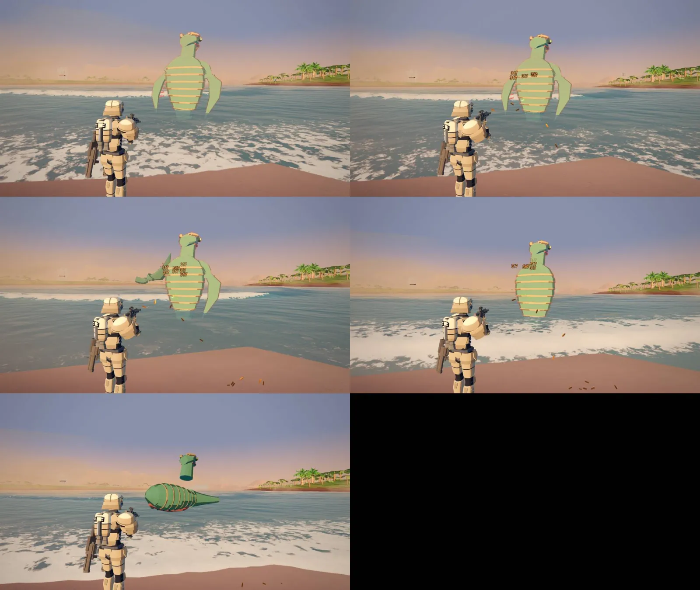
Trees felled by gunfire: rifle and grenade live M95
Updated 11-15 10:50 PM ET · captured from lane builds 751c07b045 / 02f815e348
What changed: Gunfire fells trees: four rifle rounds drop a small palm (it took ten); one grenade snaps a mid tree.
Where to look: Top sheet: the small palm falling after round four. Bottom sheet: the grenade blast and the trunk snapping.
Top: four rifle rounds fell a small palm (it took ten). Bottom: one grenade snaps a mid tree; palms outside the blast stay standing. Mech bullets on trees: not seen yet.


The Coil breaks into seven pieces live M95
Updated 11-15 10:27 PM ET · captured from lane build 04aff579f3
What changed: The Coil now breaks into seven solid pieces; before, one big faded piece was left.
Where to look: The strip left to right: alive, the kill, then 1 s and 3 s later: count the solid pieces.
It used to leave one big faded piece. Frames: alive, the kill, one second later, three seconds later. Look for solid pieces flying apart.
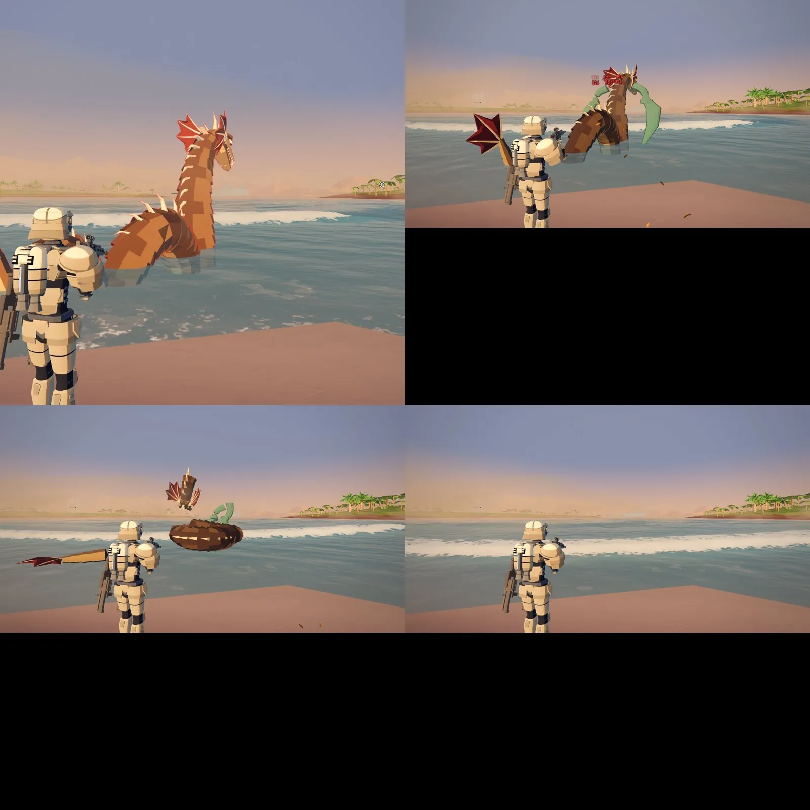
The pilot swims live M87
Updated 11-15 7:44 PM ET · captured from lane rounds 4 and 5
What changed: Deep water: a front crawl with helmet, shoulders and a stroking arm above the surface; no drowning by timer since M92.
Where to look: First sheet: the stroke at the play camera and from the side. Second still: the play view mid-stroke.
A front crawl in deep water: helmet, shoulders and a stroking arm above the surface. Since M92 a swimming pilot no longer drowns by a timer.
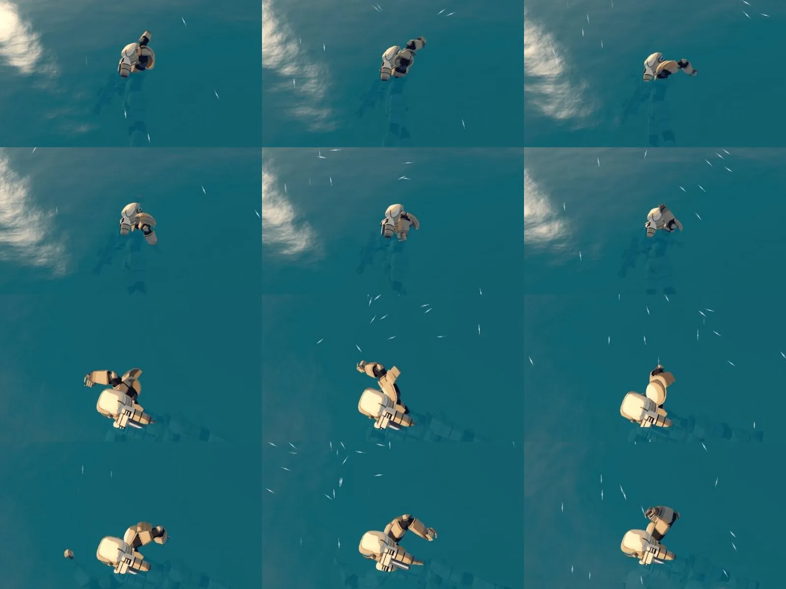

Extraction outro live M85, older capture
Updated 11-15 6:53 PM ET · captured from M85 build (older than live)
What changed: Since this capture the wait on the empty sunset was cut to about 3 seconds (M88).
Where to look: Video end: the sunset hold is longer here than live.
Captured on M85. Since then the wait on the empty sunset was cut to about 3 seconds (M88) and the HUD and health bars are hidden during the ending (M93); neither is in this clip.
 Open the video on its own (3.3 MB)
Open the video on its own (3.3 MB)